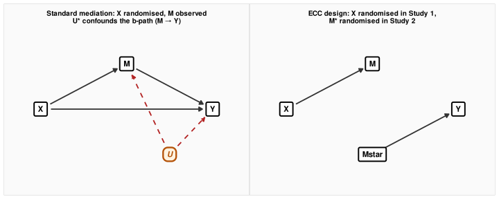
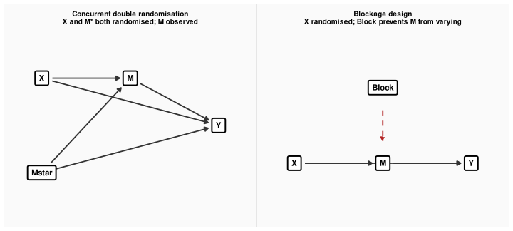
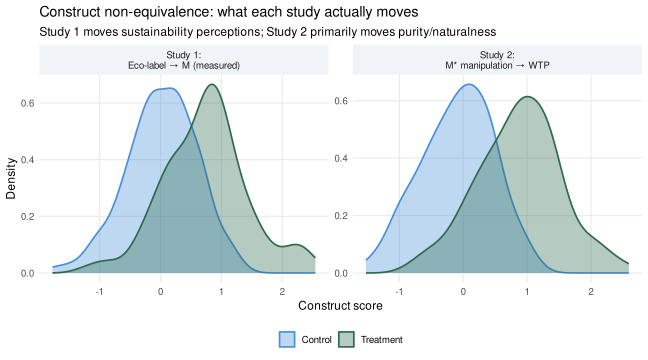

Part 5: Experimental Causal Chain Designs
TipHow to use the code in this section
The code blocks throughout this section contain inline annotations explaining what data structures go in, what the key function arguments control, and what to look for in the output. Click any “▶ Code” triangle to expand a block and read the annotations alongside the code. Treat them as a guided checklist: wherever you see a comment starting with # ──, it marks a decision point you would need to revisit with your own data.
Part 5: Experimental Causal Chain Designs
Part 4 showed how to estimate a mediation effect statistically — fitting a path model, computing the indirect effect \(a \times b\), and testing its sensitivity to unmeasured confounding between M and Y. The trouble with that approach is that the \(b\)-path (M → Y) is observational. Randomisation of X establishes the \(a\)-path cleanly, but M is never randomised. As Part 4 noted, an unobserved variable that drives both M and Y can produce an apparent indirect effect that is entirely spurious.
This part addresses that problem directly. Rather than estimating the causal chain from correlations in a single study, experimental causal chain designs test each link in the chain with a separate experimental manipulation:
- Study 1: Randomise X → measure M. Does X causally influence M?
- Study 2: Randomise M* → measure Y. Does M causally influence Y?
The logic is clean: if the eco-label moves perceived sustainability (Study 1), and if experimentally inducing perceived sustainability increases WTP (Study 2), then we have experimental evidence for both links in the chain. The inferential foundation no longer depends on the observational \(b\)-path.
But this two-study strategy rests on one assumption that is so fundamental it is often left unstated, and it is a heavy one: the M you measured in Study 1 and the M* you manipulated in Study 2 must refer to the same underlying construct. If they do not — if “perceived sustainability” as measured by a five-item scale in Study 1 captures something meaningfully different from what a three-sentence manipulation in Study 2 actually induces — then the chain you claim to have established is an illusion. You have shown that a label increases one construct and that a manipulation of a different construct increases WTP. The two studies need not connect at all.
NoteThe three-module connection
Module 1 was about measuring the latent dimension of Y: does your scale capture the right construct, or is it contaminated by method variance, confounds, and poor discriminant validity? The same measurement challenge applies to M in Study 1. If your mediator measure has poor construct validity — low reliability, poor discriminant validity from adjacent constructs, sensitivity to measurement artefacts — then the \(a\)-path estimate is attenuated and the construct you think you have measured may not be the one that actually matters.
Module 2 was about what is in X: when you randomise participants to an eco-label vs. no-label condition, what exactly have you manipulated? The same validity question applies to the M* manipulation in Study 2. A high-vs.-low sustainability framing manipulates something, but is it specifically perceived sustainability, or does it simultaneously activate perceptions of product quality, price-worthiness, brand authenticity, and personal identity? All the construct validity problems from Module 2 reappear here — not for the treatment, but for the mediator manipulation.
Experimental causal chain designs require you to solve both measurement problems simultaneously: M must be measured validly in Study 1 and manipulated purely and specifically in Study 2. These two demands point directly back to what Modules 1 and 2 taught.
Section 1: Why the Statistical Approach Alone Is Not Enough
The key identification problem in standard mediation was foreshadowed at the end of Part 4. Randomising X satisfies the first of two sequential ignorability conditions — no confounding of X → M — but it does nothing for the second: no confounding of M → Y. The diagram below shows the structural problem.
In the left panel, the dashed arrow from U* to both M and Y means the observed M–Y correlation mixes causal signal with confounding. In the right panel, M* is randomised — the \(b\)-path is clean by design. The price is a new structural assumption: M (measured in Study 1) and M* (manipulated in Study 2) must represent the same causal quantity. That assumption is shown as an implicit connection between M and M* — a bridge that the design itself cannot verify.
Spencer, Zanna & Fong (2005) introduced this two-study logic under the label experimental causal chain design and illustrated it with a classic example from social psychology. Word, Zanna & Cooper (1974) conducted two studies on racial bias in interviewing. Study 1 showed that White interviewers behaved more coldly toward Black applicants (less eye contact, more errors, shorter interviews). Study 2 showed that when interviewers were trained to behave coldly toward White applicants, those applicants performed worse in interview tasks. Together, the studies established a causal chain: race → interviewer coldness → applicant performance. Neither study alone could have done this.
Section 2: The Two-Study Experimental Causal Chain (ECC) Design
The ECC design is the cleanest experimental approach to mediation. Its structure is:
ImportantECC Design Structure
Study 1: Participants are randomly assigned to X = 1 (treatment) or X = 0 (control). At the end of the study, M is measured. The analysis asks: does X significantly and substantially change M?
Study 2: A new sample of participants is randomly assigned to M* = high or M* = low — a direct manipulation of the mediator. Y is then measured. The analysis asks: does M* significantly and substantially change Y?
The inferential conclusion: If both links are established, the causal chain X → M → Y is supported — provided that M and M* reflect the same underlying construct.
Applied to the eco-label example: Study 1 randomly shows participants either the eco-label or no label, then measures perceived sustainability on a validated five-item scale. Study 2 randomly assigns a new sample to read either a compelling sustainability brief (high M*) or a neutral product description (low M*), then measures WTP. If eco-labels raise perceived sustainability and high perceived sustainability raises WTP, the chain is established experimentally.
What the ECC design achieves
The ECC design provides two clean causal estimates where statistical mediation provides one clean and one observational estimate:
| Path | Statistical mediation | ECC design |
|---|---|---|
| \(a\)-path: X → M | Causal (X randomised) | Causal (X randomised) |
| \(b\)-path: M → Y | Observational (M not randomised) | Causal (M* randomised) |
The gain is substantial. But the ECC design cannot directly estimate the magnitude of the indirect effect — that requires knowing both \(a\) and \(b\) on a common scale and combining them, which brings back the construct equivalence problem. What the ECC design provides is qualitative confirmation: each link in the chain is causal.
A simulation: the ECC design under ideal conditions
▶ Simulate a successful two-study ECC design
set.seed(2025)
N_s1 <- 200 # Study 1 participants
N_s2 <- 200 # Study 2 participants
# True parameters for the eco-label chain
a_true <- 0.90 # eco-label raises perceived sustainability by 0.90 SD
b_true <- 0.70 # each SD of perceived sustainability raises WTP by 0.70
# ── Study 1: Randomise eco-label → measure perceived sustainability ─────────────
# X: 0 = no label, 1 = eco-label
X_s1 <- rbinom(N_s1, 1, 0.5)
perc_sust_meas <- a_true * X_s1 + rnorm(N_s1, 0, 0.80)
# ── YOUR DATA: replace X_s1 with your treatment assignment column and
# perc_sust_meas with your mediator scale score (standardise it).
df_s1 <- data.frame(eco_label = X_s1, perc_sust = perc_sust_meas)
# ── Study 2: Randomise sustainability framing → measure WTP ───────────────────
# M_manip: 0 = low sustainability framing, 1 = high sustainability framing
M_manip <- rbinom(N_s2, 1, 0.5)
WTP <- b_true * M_manip + rnorm(N_s2, 0, 0.80)
# ── YOUR DATA: replace M_manip with your mediator manipulation (0/1) and
# WTP with your continuous outcome measure.
df_s2 <- data.frame(sust_manip = M_manip, WTP = WTP)
# ── Estimate both paths ────────────────────────────────────────────────────────
fit_a <- lm_robust(perc_sust ~ eco_label, data = df_s1)
fit_b <- lm_robust(WTP ~ sust_manip, data = df_s2)
tidy(fit_a) |>
filter(term == "eco_label") |>
select(term, estimate, std.error, p.value, conf.low, conf.high) |>
knitr::kable(digits = 3, caption = "Study 1: a-path (eco-label → perceived sustainability)")| term | estimate | std.error | p.value | conf.low | conf.high |
|---|---|---|---|---|---|
| eco_label | 0.793 | 0.11 | 0 | 0.577 | 1.01 |
▶ Simulate a successful two-study ECC design
tidy(fit_b) |>
filter(term == "sust_manip") |>
select(term, estimate, std.error, p.value, conf.low, conf.high) |>
knitr::kable(digits = 3, caption = "Study 2: b-path (sustainability framing → WTP)")| term | estimate | std.error | p.value | conf.low | conf.high |
|---|---|---|---|---|---|
| sust_manip | 0.593 | 0.121 | 0 | 0.355 | 0.832 |
Both paths recover the true parameters well. But note what we cannot do from these two studies alone: we cannot compute \(\hat{a} \times \hat{b}\) and call it the causal indirect effect of the eco-label on WTP. The \(a\)-path is estimated in units of the measured mediator scale. The \(b\)-path is estimated in units of the binary manipulation dummy. These are not the same metric, and the quantitative product has no clean causal interpretation unless we make a very strong additional assumption about how the binary manipulation maps onto the continuous measurement scale.
Section 3: Manipulation-of-Mediator Designs
Pirlott & MacKinnon (2016) provide a comprehensive taxonomy of designs that manipulate the mediator rather than merely measuring it. The two-study ECC design is the most common, but two other designs deserve particular attention: the concurrent double randomisation (2×2 factorial) design and the blockage/enhancement design.
Concurrent double randomisation (2×2 factorial)
Rather than running two separate studies, both X and M* are randomised simultaneously in a single 2×2 design. Participants are assigned to one of four cells:
| Low M* (low sustainability framing) | High M* (high sustainability framing) | |
|---|---|---|
| X = 0 (no eco-label) | Control–Low M* | Control–High M* |
| X = 1 (eco-label) | Treated–Low M* | Treated–High M* |
The main effect of X estimates the total treatment effect. The main effect of M* estimates the causal effect of the mediator on Y. The critical test is the interaction: if X works through M, then the effect of X on Y should be attenuated when M* is held at a constant high level (because treatment can no longer move M — it is already maxed out by the manipulation), and should be present when M* is at the low level.
Spencer et al. (2005) call this the manipulation-of-mediator-with-moderator (MOM) design. Pirlott & MacKinnon (2016) call it concurrent double randomisation and note that it is the most statistically efficient of the experimental mediator designs — two manipulations in one study.

Blockage and enhancement designs
The blockage design is particularly compelling as a causal test. Rather than directly manipulating M, the researcher introduces an experimental factor that prevents M from varying. If the eco-label truly works through perceived sustainability, then blocking perceived sustainability — holding it constant at a low level regardless of label condition — should eliminate the label’s effect on WTP. If the effect persists even when M is blocked, M is not the mechanism.
The enhancement design works in the opposite direction: an enhancement factor aligns M* with the treatment, amplifying the expected effect of X on Y if M is the true path. In combination, blockage and enhancement designs can triangulate the causal role of a mediator in a way that correlational methods cannot.
| Design | What is randomised | What you can conclude |
|---|---|---|
| Two-study ECC | X in Study 1; M* in Study 2 | Both causal links established separately |
| Concurrent (2×2) | Both X and M* simultaneously | Efficient; tests interaction pattern expected under mediation |
| Blockage | X plus a blocker of M | If effect disappears when M is blocked, M is the mechanism |
| Enhancement | X plus an enhancer of M | If effect is amplified when M is boosted, M is the mechanism |
Section 4: The Construct Equivalence Assumption
Every design in this part shares one assumption that cannot be satisfied by randomisation alone. It is, as the user of these methods should acknowledge plainly: a heavy assumption.
WarningThe construct equivalence assumption
The M measured in Study 1 and the M* manipulated in Study 2 must tap the same underlying psychological construct.
Without this assumption, the two-study design does not establish a causal chain. It establishes two separate causal facts that may have nothing to do with each other.
What makes this assumption non-trivial? Consider what each operation actually does:
Measuring M (Study 1): A five-item scale asking participants to rate the product’s environmental benefit, carbon footprint awareness, long-term sustainability, and eco-friendliness. The latent construct captured by this scale reflects the entire network of beliefs and affects that participants associate with environmental impact — built up from prior experience, media exposure, personal values, and in-study processing.
Manipulating M* (Study 2): A three-sentence paragraph describing a product as “made with sustainably sourced materials from certified suppliers, produced using renewable energy, and designed to minimise packaging waste.” This paragraph activates something — but what? Perceptions of environmental benefit, yes. But also product quality signals, price-worthiness inferences, brand authenticity judgements, and perhaps identity-relevant motivations (“I’m the kind of person who chooses sustainable products”).
The construct activated by the Study 2 manipulation may overlap substantially with what the Study 1 scale measures — but it is not the same operation. And if the part of the Study 2 manipulation that drives WTP is product quality signals rather than environmental perceptions, then the ECC design has established that eco-labels raise environmental perceptions (Study 1) and that product quality signals raise WTP (Study 2), while the actual operative link between the two studies is broken.
The Module 1 and Module 2 connection made concrete
Module 1 showed that a measurement instrument can be contaminated by adjacent constructs — that a scale intended to measure perceived sustainability might also be loading on general product affect, trust in brands, or environmental identity. The solution was discriminant validity testing, CFA, and HTMT analysis.
Module 2 showed that a manipulation that ostensibly operationalises “eco-label exposure” might simultaneously change product quality inferences, perceived price fairness, and brand associations — what Spencer et al. (2005) called the exclusion restriction for the treatment (Module 2, Part 2). The solution was careful manipulation checks and attention to what the manipulation uniquely activated.
Both of these disciplines are required simultaneously for the ECC design to be interpretable:
- The Study 1 mediator measure needs the measurement validity demonstrated in Module 1: high reliability, good convergent validity, adequate discriminant validity from quality, authenticity, and identity constructs.
- The Study 2 mediator manipulation needs the manipulation validity examined in Module 2: a focused, narrow experimental operationalisation that moves M* specifically, with process checks showing what changed and what did not.
Without both, construct equivalence is an assumption asserted, not a condition verified.
A simulation: what happens when construct equivalence fails
The following simulation makes the failure concrete. Two researchers run an ECC design on the eco-label effect. The Study 1 scale is valid — it measures environmental sustainability perceptions well. But the Study 2 manipulation inadvertently conflates sustainability with perceived product naturalness/purity — a related but distinct construct. Researchers who ignore this report a supported causal chain. The simulation shows how the estimates can be misleading.
▶ Simulate ECC with construct non-equivalence
set.seed(2025)
N <- 300
# ── True latent constructs ─────────────────────────────────────────────────────
# Two constructs: sustainability (S) and naturalness/purity (P)
# They are correlated (r ≈ 0.55) but distinct
S <- rnorm(N) # latent sustainability
P <- 0.55 * S + sqrt(1 - 0.55^2) * rnorm(N) # latent purity (correlated)
# ── Study 1: Eco-label → measured perceived sustainability ────────────────────
# The eco-label primarily increases S (a_true = 0.85)
X_s1 <- rbinom(N, 1, 0.5)
S_s1 <- 0.85 * X_s1 + rnorm(N, 0, 0.60)
# Measured M in Study 1 taps S well (loading = 0.90) with minor P contamination
M_measured <- 0.90 * S_s1 + 0.10 * (0.55 * S_s1 + rnorm(N, 0, 0.80)) + rnorm(N, 0, 0.30)
df_study1 <- data.frame(eco_label = X_s1, M_measured = M_measured)
# ── Study 2: Manipulation moves P, not S ──────────────────────────────────────
# The "sustainability framing" used in Study 2 primarily activates P (naturalness)
# rather than S (environmental concern). The two constructs are correlated (r ≈ 0.55)
# so M* is not orthogonal to S — but the direct causal driver of Y is S, not P.
X_s2 <- rbinom(N, 1, 0.5) # assigned to high vs. low "sustainability" framing
P_s2 <- 0.80 * X_s2 + rnorm(N, 0, 0.60) # manip primarily moves P
S_s2 <- 0.55 * P_s2 + sqrt(1 - 0.55^2) * rnorm(N, 0, 0.70) # S moves via P
# Y is caused by S (the true mechanism), not P
b_true_S <- 0.70
WTP_s2 <- b_true_S * S_s2 + rnorm(N, 0, 0.60)
df_study2 <- data.frame(sust_manip = X_s2, WTP = WTP_s2)
# ── What the researcher observes ──────────────────────────────────────────────
fit_a_obs <- lm_robust(M_measured ~ eco_label, data = df_study1)
fit_b_obs <- lm_robust(WTP ~ sust_manip, data = df_study2)
bind_rows(
tidy(fit_a_obs) |> filter(term == "eco_label") |>
mutate(Study = "Study 1", Path = "a-path: eco-label → perc. sustainability (measured)"),
tidy(fit_b_obs) |> filter(term == "sust_manip") |>
mutate(Study = "Study 2", Path = "b-path: sust. manipulation → WTP")
) |>
select(Study, Path, estimate, std.error, p.value, conf.low, conf.high) |>
knitr::kable(digits = 3,
caption = "ECC results under construct non-equivalence: both paths appear significant")| Study | Path | estimate | std.error | p.value | conf.low | conf.high |
|---|---|---|---|---|---|---|
| Study 1 | a-path: eco-label → perc. sustainability (measured) | 0.723 | 0.074 | 0 | 0.578 | 0.868 |
| Study 2 | b-path: sust. manipulation → WTP | 0.368 | 0.087 | 0 | 0.196 | 0.540 |
Both paths are statistically significant and substantially sized — a researcher would conclude that the eco-label works through sustainability perceptions. Yet the Study 2 manipulation primarily activated purity/naturalness, not environmental sustainability. The true mechanism (S → Y) is present, but the Study 2 manipulation triggers it indirectly, through the S–P correlation. The causal chain that is “established” is partly an artefact of construct overlap rather than construct equivalence.
▶ Visualise the true vs. activated constructs across studies
construct_df <- tibble(
Study = c(rep("Study 1:\nEco-label → M (measured)", N),
rep("Study 2:\nM* manipulation → WTP", N)),
Construct = c(rep("Sustainability (S)\nprimary target", N),
rep("Purity (P)\nactually activated", N)),
Score = c(M_measured, P_s2),
Treatment = c(X_s1, X_s2)
) |>
mutate(
Study = factor(Study, levels = c("Study 1:\nEco-label → M (measured)",
"Study 2:\nM* manipulation → WTP")),
Condition = ifelse(Treatment == 1, "Treatment", "Control")
)
ggplot(construct_df, aes(x = Score, fill = Condition, colour = Condition)) +
geom_density(alpha = 0.35, linewidth = 0.8) +
facet_wrap(~Study, scales = "free") +
scale_fill_manual(values = c(Control = clr_ctrl, Treatment = clr_eco)) +
scale_colour_manual(values = c(Control = clr_ctrl, Treatment = clr_eco)) +
labs(
title = "Construct non-equivalence: what each study actually moves",
subtitle = "Study 1 moves sustainability perceptions; Study 2 primarily moves purity/naturalness",
x = "Construct score", y = "Density", fill = NULL, colour = NULL
) +
theme_mod3()
The two distributions overlap — which is why the chain appears to hold — but the mechanism in each study is different. This is exactly the kind of failure that measurement validity work (Module 1) and manipulation validity work (Module 2) are designed to detect before the ECC design is published.
Section 5: What the Design Can and Cannot Establish
A well-executed ECC design provides stronger evidence for a causal chain than statistical mediation in a single study. But it is important to be precise about what the design establishes and what it does not.
What it does establish
- Causal sufficiency of the chain: If the eco-label increases M and if manipulated M* increases Y, then a chain from X through M to Y is causally possible. The evidence is experimental at both links.
- Process evidence: The ECC design provides qualitative evidence that the mediator is not merely correlating with the treatment — it can be experimentally activated to produce the outcome independently of X.
What it does not establish
- The indirect effect magnitude. The product \(\hat{a} \times \hat{b}\) from two separate studies using different operationalisations of M is not a clean estimate of the causal indirect effect. The two estimates are in different units and were obtained from different samples under different conditions.
- Construct equivalence. The design assumes but cannot verify that M and M* reflect the same construct. Demonstrating this requires external validation: (a) showing that the Study 2 manipulation produces scores on the Study 1 measurement scale that differ by the amount the Study 1 treatment difference implies; (b) showing that the manipulation check for M* loads on the same factor as the Study 1 measure; (c) ruling out alternative constructs activated by the Study 2 manipulation.
- Freedom from alternative explanations in Study 2. The Study 2 manipulation may have effects beyond M* — any experimentally induced change that covaries with Y and is not the intended mediator is a threat to the inference. Pirlott & MacKinnon (2016) call these alternative explanations: confounds of the M* manipulation itself.
NotePractical implication: treat construct equivalence as a hypothesis, not an assumption
The construct equivalence assumption is strong enough that it should be approached empirically wherever possible. Practical steps:
Measure M in Study 2 as well. Even though Study 2 is designed to manipulate M*, also administer the Study 1 mediator scale after the manipulation. Check that (a) the manipulation changes the scale scores and (b) the manipulation-induced scale shift is in the direction and of the magnitude implied by Study 1. This is the closest available empirical check on construct equivalence.
Use multiple operationalisations of M*. If construct equivalence is critical, run a Study 2b with a different manipulation of M* and confirm that results replicate. Replication across operationalisations strengthens the inference that it is the construct — not a specific manipulation feature — that matters.
Report manipulation checks that distinguish M from adjacent constructs. Following Module 2 logic, show that the manipulation moved perceived sustainability but did not move perceived quality, perceived naturalness, or price expectations. The more adjacent constructs are measured and shown not to change, the stronger the claim that M* is a specific manipulation of M.
Forward Connections
NoteWhere this fits in the three-module arc
This part completes the causal inference module by returning to experimentation — but with the full weight of the preceding methods as context.
Part 4 (Mediation Analysis) provided the statistical framework for estimating indirect effects and assessing their sensitivity to unmeasured confounding. The ECC design in this part is a complement, not a substitute: in many research programmes, statistical mediation in Study 1 motivates the design of a confirmatory ECC sequence in Studies 2 and 3.
Module 2, Part 2 (The Exclusion Restriction) established that a treatment manipulation is only as valid as the narrow construct it uniquely activates. That principle now applies twice in the ECC design — once to the treatment X and once to the mediator manipulation M*.
Module 1 (Measurement) provided the tools — CFA, reliability, discriminant validity, HTMT — to evaluate whether a measure captures its intended construct. Every one of those tools is directly applicable to evaluating the Study 1 mediator measure and to verifying that the Study 2 manipulation check reflects the intended construct rather than a neighbouring one.
The full evidential chain — from latent construct measurement (Module 1) through treatment design validity (Module 2) to causal identification (Module 3) — is what makes a confident claim that an eco-label increases WTP because it raises perceived sustainability possible. Weakness at any link weakens the whole.
Researcher Checklist: Experimental Causal Chain Designs
NoteKey questions before, during, and after an ECC design
Design stage
Analysis stage
Interpretation stage